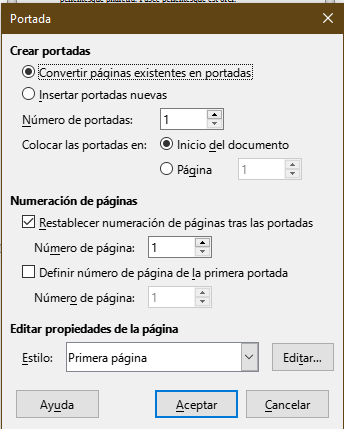
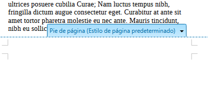
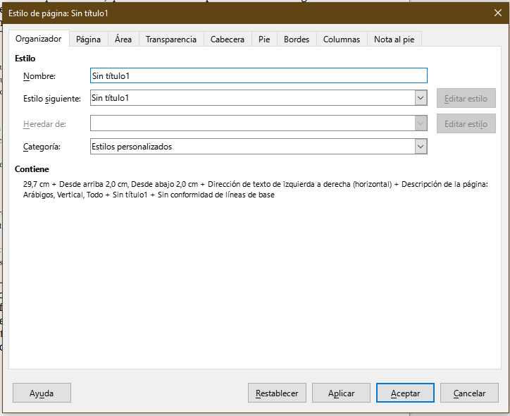

Writer 04
Estilos de página y plantillas
Personalización de la página
En la ayuda de libre office podemos acceder a la personalización de los estilos de página, pero, ¿Por qué querríamos cambiar los estilos de página?
- Tener una portada o primera página diferente (y controlar su numeración en relación al resto del texto)
- Tener encabezados y pies de página diferente entre páginas izquierda y derechas (o alternadas)
- Tener alguna hoja horizontal (por ejemplo una tabla a página completa) dentro de un documento vertical
- Numerar secciones de forma diferente (apéndices, texto principal, prefacios, etc.)
- Dejar márgenes diferentes entre páginas izquierda y derecha (necesario si usamos los márgenes y se imprime doble faz)
Portadas y numeración de páginas
Para insertar una portada debemos seleciconar formato -> portada donde accedemos al siguiente menú

Las opciones para ajustar la numeración de página son interesantes ya que en el uso más común, no deseamos que la portada tenga un número sino que la numeración comience luego de ella.
El resto de las opciones considero que se auto explican y se dejan como ejercicio al lector.
Cabeceras y pies de página
Las cabeceras y pies de página están accesbles de varias formas. Una de ellas es simplemente haciendo doble click en la zona correspondiente, aunque también puede accederse a las propiedades generales de los pies y cabeceras haciendo formato > estilo de página y también desde insertar > cabecera y pie . Lo que debe tenerse en cuenta en que los pies de página son dependientes del estilo de la página en sí, es decir, si la pagina actual está definida como “pagina izquierda” o “estilo de página predeterminado” o “pimera página” la configuración de los pies y cabeceras será la del estilo correspondiente. Claro está que podremos unificar o diferenciar los estilos tanto como queramos.

En los pies y cabeceras podremos escribir a gusto y se repetirán en todas las páginas que tengan el mismo estilo. Un uso común es la personalización de los campos que se muestran, para ello podemos ir a insertar -> número de página o insertar -> campo para insertar en el pie o cabecera la información que consideremos conveniente.
Saltos manuales de página
Si deseamos cambiar el estilo de página y por ejemplo, pasar de una columna a varias, o de una página vertical a otra horizontal, debemos primero introducir un salto manual para ello, vamos a insertar > mas saltos> salto manual y elegimos el estilo al que queremos cambiar. Por ejemplo, podríamos tener un estilo de página a una columna, y otro estilo a dos columnas y alternar entre ellos a lo largo de un documento, o como se dijo más arriba, una tabla a página completa usando un formato horizontal.
Columnas
Para seleccionar columnas tenemos dos opciones: si es solo una sección mínmia, un recuadro, usaremos el cuadro de texto: insertar > cuadro de texto y luego haciendo click derecho, seleccionaremos atributos del texto en donde podremos elegir la cantidad de columnas.
Si por el contrario vamos a aplicar el estilo a la hoja entera o al documento, editaremos el estilo de la página como ya hemos visto antes: click derecho + estilo de página. Se debe Tener en cuenta que las ediciones hechas sobre el estilo vigente de esta manera se aplican a todo el documento, en otras palabras, si editamos el esitlo de página predeterminado, todas las páginas con ese estilo tomarán los cambios que hayamos hecho. En el menú de estilo de página en la solapa columnas podremos configurar las opciones como mejor nos venga.

Podemos crear un estilo a partir de uno existente si nos colocamos en la barra de estilos y hacemos click derecho -> nuevo y modificamos lo que necesitemos para luego guadarlo con otro nombre. Esto resulta útil si queremos crear algunos estilos de páginas que reutilizaremos en los informes como páginas con tablas de elementos utilizados o de datos experimentales.
videos de referencia
Plantillas
Si hemos hecho modificaciones a los estilos de writer o hemos agegado una portada, y quisiéramos reutilizar nuestro trabajo, podemos guardar el documento como una plantilla (template) para usarlo como base en el futuro. Para ello vamos a
archivo -> plantillas -> guardar como plantilla
Luego podremos al crear un documento ir a archivo -> nuevo-> plantillas y comenzar con un documento que se basa en la plantilla seleccoinada que incluso puede tener secciones predefinidas como apéndices, biliografía, etc.